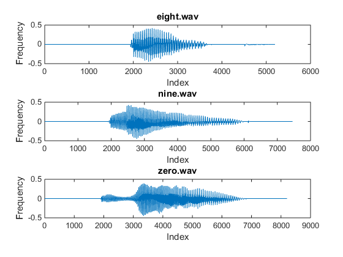

%{ Name: AudioGraph Desc: Reads, calculates and plots audio files. The output from the command window and workspace variables are saved for later use in othre programs. Author: Christopher Simon Version: 1.0 Created: 3/3/2015 Modified: 3/3/2015 %} function AudioGraph() % For each wav file as iteration i for i = 1:3 % Set the current fileName and respective nbLabel % to the corresponding values in the case list switch i case 1 fileName = 'eight.wav'; nbLabel = 'EIGHT'; case 2 fileName = 'nine.wav'; nbLabel = 'NINE'; case 3 fileName = 'zero.wav'; nbLabel = 'ZERO'; end % Read the wav file into a data array % As a note, the wave files provided are 64kbps [audioData, ~] = audioread(fileName); % Calculate the audioData calculate(nbLabel, audioData); fprintf('\n'); % Draw the plot % X and Y coordinates for the subplots % X represents each index of the data array % Y represents the raw data in the audio file x = 1:length(audioData); y = audioData; % Subplot i on a 3x1 grid of subplots subplot(3, 1, i); % The subplot plot data plot(x, y); % Title and axis labels title(fileName); xlabel('Index'); ylabel('Frequency'); end %{ Calculate the data from a given array Save and print the results of the calculations to .mat and .txt files respectivly %} function calculate(nb, audioData) % Mean me = mean(audioData); % Standard Deviation de = std(audioData); % Variance va = std(audioData) .^ 2; % Average Power ap = mean(audioData .^ 2); % Average Magnitude am = mean(abs(audioData)); % Save the calculated data to a .mat file. % Content must be saved in unique files so that all % calculations are saved as opposed to only % the last calculation values in one file matFile = sprintf('%s.mat', nb); save(matFile); % Print the data print(nb, me, de, va, ap, am); %{ Print the status of the data nb - Number Label me - Mean de - Deviation va - Variance ap - Avg Power am - Avg Magnitude %} function print(nb, me, de, va, ap, am) % Status Messages % Messages are padded with 2 zeros (0) in front % and are truncated at five decimal places. % This is why +02.5float is used for formatting uText = 'Utterance of the word %s\n'; mText = 'Mean: %+02.5f\n'; dText = 'Deviation: %+02.5f\n'; vText = 'Variance: %+02.5f\n'; pText = 'Power: %+02.5f\n'; gText = 'Magnitude: %+02.5f\n'; % Open a file handler with append+ privileges fh = fopen('voiceSignature.txt', 'a+'); % Print the messages and their passed values % to a file and the command window % For each print source, fh and the command window, as incrament i % See fprintf for command window as 1 for i = [fh, 1] fprintf(i, uText, nb); fprintf(i, mText, me); fprintf(i, dText, de); fprintf(i, vText, va); fprintf(i, pText, ap); fprintf(i, gText, am); end
Utterance of the word EIGHT Mean: -0.00102 Deviation: +0.07712 Variance: +0.00595 Power: +0.00595 Magnitude: +0.03385 Utterance of the word NINE Mean: -0.00206 Deviation: +0.07968 Variance: +0.00635 Power: +0.00635 Magnitude: +0.04345 Utterance of the word ZERO Mean: -0.00218 Deviation: +0.08356 Variance: +0.00698 Power: +0.00699 Magnitude: +0.04555